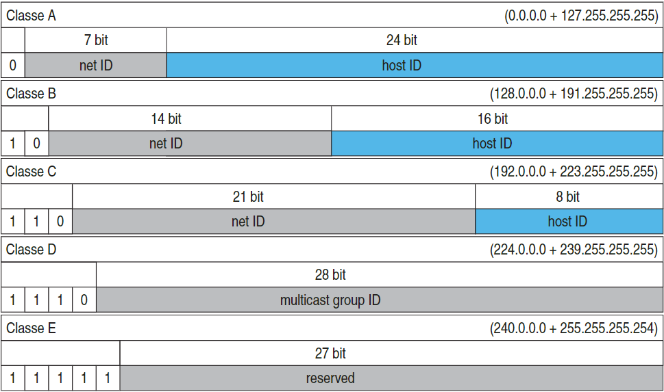
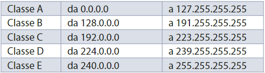
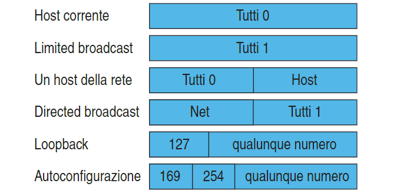

A seconda del valore dei bit più significativi gli indirizzi IP sono sud-divisi in classi,
che si differenziano in base alle dimensioni della rete.
Le WAN hanno generalmente IP-address di classe A, mentre
le LAN hanno IP-address di classe B o C.
Oltre che per il prefisso, le varie classi di
indirizzi si distinguono per la diversa ripartizione dei bit
tra l’identificativo della rete locale (Net-ID) e quello della
scheda di rete (Host-ID).
Classi IP

È quindi necessario scegliere l’indirizzo di rete in funzione del numero di macchine
che devono essere connesse:
- classe A: sono indirizzi utilizzati in reti che hanno un numero cospicuo di host, in quanto il campo dell’Host-ID è di 24 bit e può pertanto identificare circa 16 milioni di host. I 7 bit dedicati al Net-ID permettono di definire solo 128 reti di classe A in tutto il mondo;
- classe B: sono adatti per reti di dimensioni intermedie, dato che agli host sono dedicati circa 64.000 indirizzi e che sono disponibili circa 16.000 reti di questa dimensione (14 bit di indirizzo di rete);
- classe C: sono i più utilizzati e permettono di definire reti di non più di 256 host; nonostante questa limitazione, il numero delle reti è elevato dato che vengono usati 21 bit nel Net-ID;
- classe D : sono dedicati al multicasting (RFC 1112);
- classe E: sono riservati per usi futuri
- classe A: sono indirizzi utilizzati in reti che hanno un numero cospicuo di host, in quanto il campo dell’Host-ID è di 24 bit e può pertanto identificare circa 16 milioni di host. I 7 bit dedicati al Net-ID permettono di definire solo 128 reti di classe A in tutto il mondo;
- classe B: sono adatti per reti di dimensioni intermedie, dato che agli host sono dedicati circa 64.000 indirizzi e che sono disponibili circa 16.000 reti di questa dimensione (14 bit di indirizzo di rete);
- classe C: sono i più utilizzati e permettono di definire reti di non più di 256 host; nonostante questa limitazione, il numero delle reti è elevato dato che vengono usati 21 bit nel Net-ID;
- classe D : sono dedicati al multicasting (RFC 1112);
- classe E: sono riservati per usi futuri

Indirizzi di Broadcast
Se vogliamo trasmettere un messaggio a tutti i PC di
sottorete basta porre uguali a 1 tutti i bit dell’indirizzo
di host: ogni macchina riconosce questo messaggio
come messaggio di broadcast e ne legge il contenuto.
Per estrarre l’indirizzo di rete da un indirizzo IP è
sufficiente porre uguale a 0 l’indirizzo dell’host.
Indirizzi Riservati
-0.0.0.0 indica l’host corrente senza specificarne l’indi-rizzo;
-255.255.255.255 è l’indirizzo di limited broad cast;
-127.x.y.z è il loopback, che ridirige i datagrammi agli strati superiori dello stesso host;
-169.254.x.y è riservato per l’autoconfigurazione degli host.
-255.255.255.255 è l’indirizzo di limited broad cast;
-127.x.y.z è il loopback, che ridirige i datagrammi agli strati superiori dello stesso host;
-169.254.x.y è riservato per l’autoconfigurazione degli host.

 Indietro
Indietro